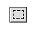
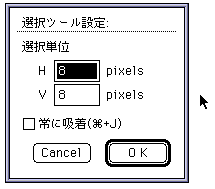
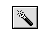

★Graphic Tools Guide
★セガペインタユーザーズマニュアル/
★Graphic Tools Guide
★セガペインタユーザーズマニュアル/
▲
戻る｜
進む▼
セガペインタユーザーズマニュアル/3.ツールパレット
■選択系ツール

長方形選択ツール
- ドラッグ：
- 長方形で範囲を選択します。
- クリック：
- 選択範囲を解除します。
- Shift(押したまま)+ドラッグ：
- 正方形で範囲を選択します。
- Control+??+ドラッグ：
- 選択単位に吸着した上記機能。
- Option+Shift++ドラッグ：
- ドラッグ&ドロップツール(後述)として機能。
- アイコンをダブルクリック：
- 選択条件を設定します。

- 選択単位：吸着させる単位を指定します。
- 常に吸着：常に選択単位に吸着して動作します。
「+J」のショートカットが割当てられています。
- （パレット編集ウィンドウ・カラー編集ウィンドウの場合）
- ドラッグ：
- 長方形で範囲を選択します。
- クリック：
- 選択範囲を解除します。
- 投げ縄(自由形状選択)ツール
- ドラッグ：
- 自由形状で範囲を選択します。
- クリック：
- 選択範囲を解除します。
- Option+クリック：
- 多角形で範囲を選択します。
- Control+??+ドラッグ：
- 選択単位に吸着した上記機能。
- アイコンをダブルクリック：
- 選択条件を設定します。

自動選択ツール
- クリック：
- クリックされたポイントのパレットコードの連続した領域を選択します。
- Option+クリック：
- クリックされたポイントと同じパレットコードの領域を選択します。
- ◆選択領域の演算機能
- 選択系ツールは、選択時のキー操作により以下のように選択範囲が演算されます。
- Shift+ドラッグ：
- 選択範囲を追加します。
- +ドラッグ：
- 選択範囲を削除します。
- Shift++ドラッグ：
- 共通領域を選択します。
- ◆選択後の機能
- 選択系ツールは、選択後はキー操作等により、以下のように機能します。
- ドラッグ：
- 選択領域のイメージを移動します。移動元は背景色で塗りつぶされます。
- Option+ドラッグ：
- 選択領域のイメージをコピーします。移動元のイメージはそのままです。
- クリック：
- 移動またはコピー中のイメージを確定します。
- Option++ドラッグ：
- 選択範囲の枠を移動します。
▲
戻る｜
進む▼
★Graphic Tools Guide
★セガペインタユーザーズマニュアル/
Copyright SEGA ENTERPRISES, LTD., 1997